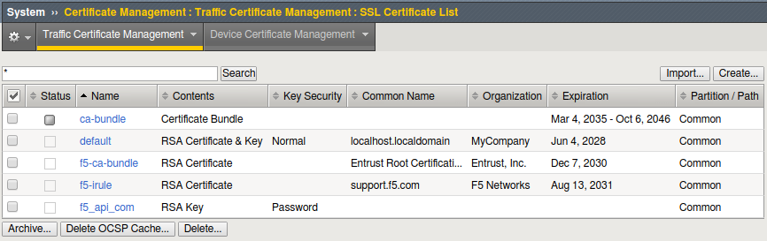
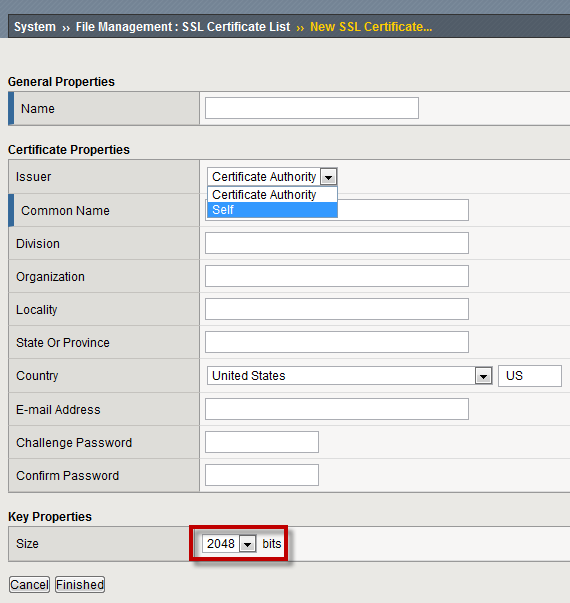
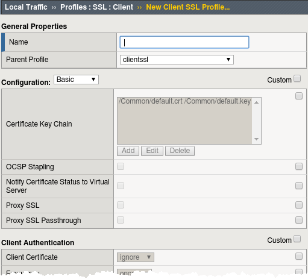
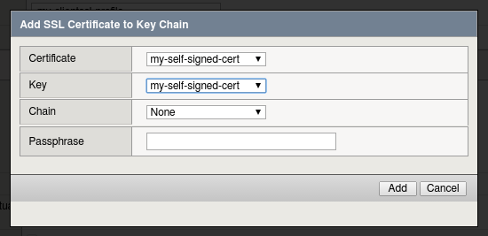

Unofficial - F5 Certification Exam Prep Material > Symposium 2026 - BIG-IP Administrator: Source | Edit on
Lab 3: SSL Offload and Security
In this Lab we will configure client side SSL processing on the BIG-IP.
Objective:
- Create a self-signed certificate
- Create a client SSL profile
- Modify your HTTP virtual server to use HTTPS
- Add addition security to your HTTPS web server using the HTTP profile
We will create a self-signed certificate and key and a SSL client profile to attach to our virtual server.
Creating a Self-signed certificate and key
- Go to System > Certificate Management > Traffic Certificate Management > SSL Certificates List and select Create


This will take you to Local Traffic >> SSL Certificates >> New SSL Certificate…
- NOTE: The default key size is 2048, you can save SSL resources on the server-side by lowering this key size.


- Enter:
- Name: my-selfsigned-cert
- Issuer: Self
- Common Name: www.f5demo.com
- Fill out the rest any way you would like.
Creating SSL Client Profile
- Go to Local Traffic>Profiles>SSL>Client menu and select Create.


- Under General Properties
- Name: my_clientssl_profile
- Under Configuration in the Certificate Key Chain section,
select the Custom box and hit Add.
- In the Add SSL Certificate to Key Chain pop-up select:
- Certificate: my-selfsigned-cert
- Key: my-selfsigned-cert
- Select Add
- In the Add SSL Certificate to Key Chain pop-up select:


- Hit Finished.
Building our New Secure Virtual Server
Go to Local Traffic>Virtual Servers and hit the Create button or hit the “+” next to Virtual Servers
- Name: secure_vs
- Destination Address/Mask: 10.1.10.105
- Port: 443 or HTTPS
- SSL Profile (Client): my_clientssl_profile (the profile you just created)
- Source Address Translation: Auto Map (remember why we need this?)
- Default Pool: www_pool
- Default all other settings. (Notice you did not require an HTTP profile)
- Finish
- Testing our secure server.
- UDF - Go to you secure_vs at https://10.1.10.105
- If you want to watch member traffic, go to the www_pool and reset the statistics.
- Open up Super Jump Host and go to Guacamole, then Login and use Firefox and Browse to your secure virtual server
- What port did your pool members see traffic on?
Securing web applications with the HTTP profile
Let’s begin by creating a custom HTTP profile.
Go to Local Traffic> Profiles>Services, select HTTP create a new profile
Under General Properties
- Name: secure-my-website
Under Settings:
- Set the Fallback Host: https://www.f5.com (this will take you an alternate site)
- Fallback on Error Codes: 404 (fallback site if a 404 error is received)
- Response Headers Allowed: Content-Type Set-Cookie Location
- Insert XForwarded For: Enabled (to save the original client ip)
- Select Finish
- Attach your new HTTP Profile to your secure_vs (HTTPS) virtual server

- Open up Super Jump Host and go to Guacamole, then Login and use Firefox to Browse to your secure virtual server
- Do web pages appear normal?
- Now browse to a bad page.
- In Firefox, right-click and choose Inspect and go to network and check the server response. Altenately you can to the Request and Response Headers from the Demo drop-down menu to view the headers. You should see your sanitized server response and the original client IP address in the x-forward-for header, which is itself new.
- You can compare the headers by accessing your HTTP virtual server your unsecure www_vs and looking at the responses.
Note
Even though the data is encrypted between your browser and the virtual server, the LTM can still modify the data (i.e. resource cloaking) because the data is unencrypted and decompressed within TMOS.